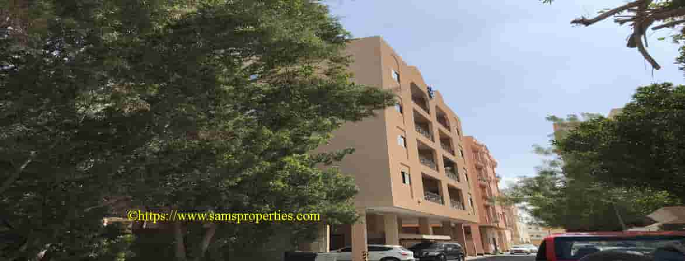
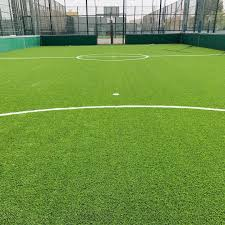

<!DOCTYPE html>
<html lang="en">
  <head>
    <meta charset="UTF-8" />
    <meta name="viewport" content="width=device-width, initial-scale=1.0" />
    <title>Experiment 4</title>
    <link
      rel="stylesheet"
      href="https://unpkg.com/leaflet@1.9.4/dist/leaflet.css"
      integrity="sha256-p4NxAoJBhIIN+hmNHrzRCf9tD/miZyoHS5obTRR9BMY="
      crossorigin=""
    />
    <style>
      #map {
        height: 100vh;
        width: 100%;
      }
    </style>
  </head>
  <body>
    <div id="map"></div>
  </body>
</html>
<script
  src="https://unpkg.com/leaflet@1.9.4/dist/leaflet.js"
  integrity="sha256-20nQCchB9co0qIjJZRGuk2/Z9VM+kNiyxNV1lvTlZBo="
  crossorigin=""
></script>
<script>
  var map = L.map("map").setView([26.22867831630157, 50.58725805672192], 13);

  // OSM layer
  var osm = L.tileLayer("https://tile.openstreetmap.org/{z}/{x}/{y}.png", {
    maxZoom: 19,
    attribution:
      '&copy; <a href="http://www.openstreetmap.org/copyright">OpenStreetMap</a>',
  });
  osm.addTo(map);

  // custom marker

  var customIcon = L.icon({
    iconUrl: "images/download.png", // Replace with your icon URL
    iconSize: [38, 38], // size of the icon
    iconAnchor: [22, 38], // point of the icon which will correspond to marker's location
    popupAnchor: [-3, -38], // point from which the popup should open relative to the iconAnchor
  });

  //marker
  var marker1 = L.marker([26.204912188369683, 50.59312654312065], {
    icon: customIcon,
  }).addTo(map);
  var popup1 = marker1
    .bindPopup(
      `
        <div style="text-align: center;">
            <h3>Home</h3>
            
            <p>This is the place where i live in.</p>
        </div>
    `
    )
    .addTo(map);

  var marker2 = L.marker([26.225878205865072, 50.520048635340565]).addTo(map);
  var popup2 = marker2
    .bindPopup(
      `
        <div style="text-align: center;">
            <h3>School</h3>
            
            <p>This is my school.</p>
        </div>
    `
    )
    .addTo(map);

  var marker3 = L.marker([26.23814692888053, 50.58514153315116]).addTo(map);
  var popup3 = marker3
    .bindPopup(
      `
        <div style="text-align: center;">
            <h3>Turf</h3>
            
            <p>This is the place where i play football with friends.</p>
        </div>
    `
    )
    .addTo(map);

  // google maps
  googleStreets = L.tileLayer(
    "http://{s}.google.com/vt?lyrs=m&x={x}&y={y}&z={z}",
    {
      maxZoom: 20,
      subdomains: ["mt0", "mt1", "mt2", "mt3"],
    }
  );
  googleStreets.addTo(map);
</script>
